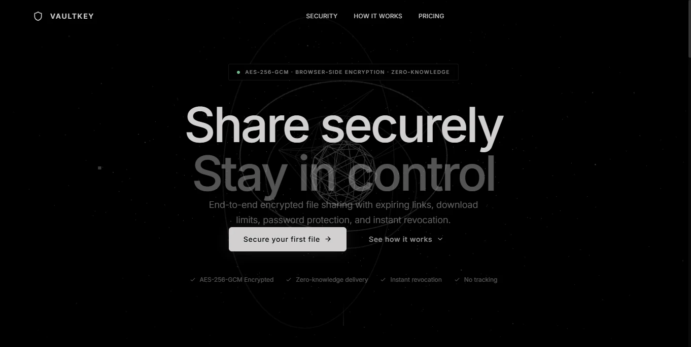
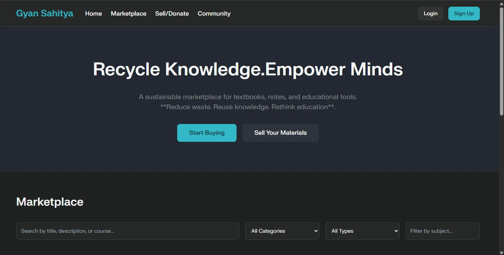
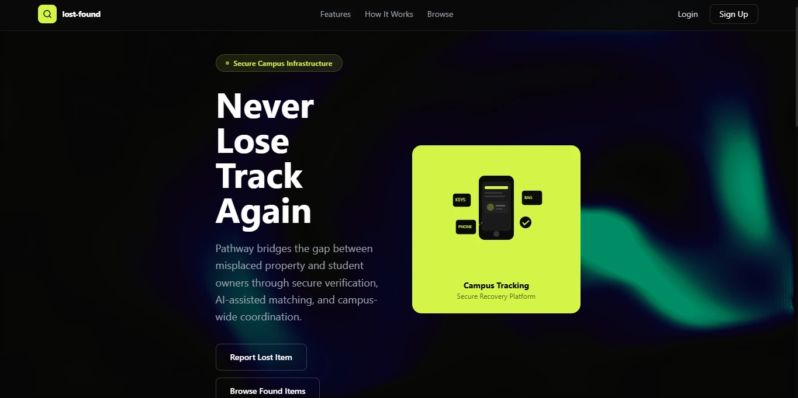
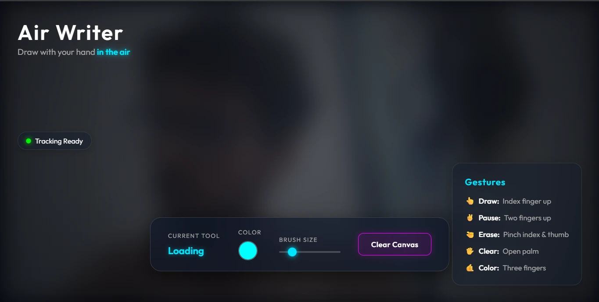

Turning Ideas
into Working
Software.
development internships
Built to solve
something real.




A lot of building.SELECTED EXPERIMENTS & APPLICATIONS / 01—04
Curious by nature.
Focused on
building.
Hi, I’m Aryan. A student who likes turning “what if” into something you can use.
I’m a second-year Artificial Intelligence & Data Science student based in Pune. I build web applications using JavaScript, React, and Supabase, with an interest in thoughtful interfaces and practical problem-solving.
I’m looking for a software development internship where I can contribute, learn from a team, and strengthen my engineering skills.
Get the full picture — download my resume ↗Ideas need
good tools.
A growing toolkit across development,
design, and getting projects online.
Languages
C · C++ · JavaScript · Python
↗Frontend
React · HTML · CSS · Tailwind CSS
↗Backend & services
Supabase · Resend
↗Design & workflow
Figma · Git · GitHub
↗Deployment
Vercel · Render · Netlify
↗Small steps.
A growing skyline.
Explore my GitHub contributions in 2D or 3D. Hover a day for details, or drag the skyline to change your perspective.
Loading GitHub activity…
Still learning.
Already building.
B.E. Artificial Intelligence
& Data Science
Marathwada Mitra Mandal Institute of Technology
Lohegaon, Pune